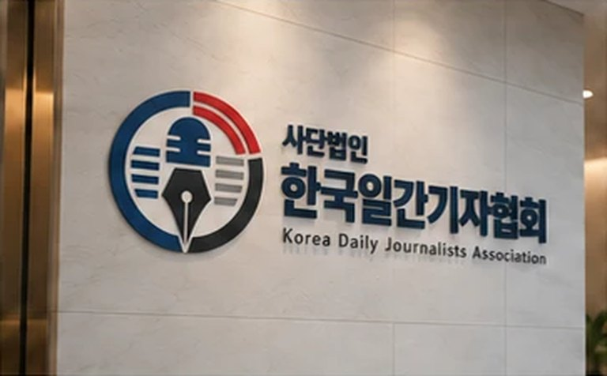

최신 소식
포토

협회소개
진실한 언론, 공정한 사회를 위한 연대
언론은 시민의 알권리를 보장하고 건강한 공론을 형성하는 민주사회의 중요한 기둥입니다. 그러나 취재 현장의 언론인은 급변하는 미디어 환경 속에서 전문성 향상의 기회, 안정적인 복지 기반, 열악한 지역 언론의 취재 여건 등 해결해야 할 과제를 안고 있습니다.
이에 일간신문 기자를 중심으로 방송, 통신, 인터넷 매체 종사자와 언론 관련 학자가 함께하는 전국 단위의 언론인 연합체로서 한국일간기자협회를 설립합니다.
본회는 언론인의 친목 도모와 복지 증진, 전문성 향상을 위한 교육, 취재 협력과 지역신문·인터넷신문 지원을 통해 건전한 언론 문화를 조성하고, 시민과 기업인이 참여하는 정책 논의를 통하여 지역사회와 지역경제 발전 등 공익 증진에 기여하고자 합니다.
| 명칭 | 사단법인 한국일간기자협회 |
|---|---|
| 영문 | Korea Daily Journalists Association (KDJA) |
| 설립근거 | 「민법」 제32조 및 「문화체육관광부 및 국가유산청 소관 비영리법인의 설립 및 감독에 관한 규칙」 |
| 사무소 | 경기도 평택시 특구로 28 원영빌딩 3층 |
| 목적 | 언론인의 친목 도모와 복지 증진, 전문성 향상 및 취재 협력을 통한 건전한 언론 문화 조성, 시민의 알권리 보장과 지역사회·지역경제 발전 등 공익 증진 |
본회는 특정 정당이나 공직선거 후보자를 지지·지원하는 정치활동을 하지 않으며, 회원의 사적 이익을 위한 영리행위를 하지 않습니다. (정관 제6조)
| 구분 | 구성 | 역할 |
|---|---|---|
| 총회 | 회원 전체 | 임원 선출·해임, 정관 변경, 예산·결산 및 사업계획 승인 |
| 이사회 | 이사 5명 이상 10명 이내 (회장 1명, 부회장 3명 이내 포함) | 업무집행, 사업계획 운영, 예산·결산서 작성, 지부 설치·운영 심의·의결 |
| 감사 | 1명 이상 2명 이내 | 재산상황 및 이사회 운영·업무집행 감사 |
| 사무국 | 사무국장 1명과 필요한 직원 (회원 자원봉사 가능) | 본회 사무 처리 |
| 위원회 | 운영위원회 및 분야별 10개 이내 분과위원회 | 분야별 목적사업 수행 |
임원은 총회에서 선출하며 임기는 2년(1회 연임 가능)이고 무보수로 봉사합니다. 명단은 선임·등기 후 게시됩니다.
기록하는 힘이
사회를 더 나은 곳으로 만듭니다
마이크와 펜촉은 말과 글로 진실을 전하는 언론을, 양옆의 행간은 기사와 기록을, 이를 감싸는 원은 언론인의 연대와 사회를 잇는 소통을 뜻합니다.
JOURNALISM
언론
COMMUNICATION
소통
PUBLIC TRUST
공공의 신뢰
TOMORROW
더 나은 사회
각 장을 누르면 조문이 펼쳐집니다.
주요사업
본회는 목적사업 수행에 지장이 없는 범위에서 주무관청의 승인을 받아 수익사업을 할 수 있으며, 그 수익금은 전액 목적사업에 사용합니다.
참가비는 해당 사업의 직접 경비를 넘지 않는 실비 수준으로 받으며, 해당 사업에 전액 사용합니다.
협회소식
회원안내
| 구분 | 자격 | 총회 의결권 |
|---|---|---|
| 정회원 | 일간신문사에 소속되어 현재 취재·보도 업무에 종사하는 기자 | ○ |
| 준회원 | 방송, 통신사, 인터넷신문, 잡지사 등에 종사하는 언론 종사자 및 일간신문사에 소속되었던 전직 기자 | – |
| 특별회원 | 언론 관련 학자 및 전문가로서 언론 발전에 전문성이 인정되는 자 | – |
| 명예회원 | 언론에 종사하지 않더라도 본회의 설립 취지에 부합하고 언론 발전과 지역사회에 기여할 뜻이 있는 덕망 있는 인사 | – |
| 단체회원 | 본회의 설립 취지에 찬동하는 지역 기자단, 언론인 단체 및 언론사 (대표자 또는 지정 1명이 권리 행사) | ○ |
회원의 권리
정회원은 임원의 선거권·피선거권을 가지며 총회에서 의견을 제안하고 의결에 참여합니다. 모든 회원은 본회 사업에 참여하고 총회 의사록과 결산서를 열람할 수 있습니다.
회원의 의무
정관 및 제 규정의 준수, 총회·이사회 결의사항의 이행, 회비 및 각종 부담금의 납부, 본회의 명예와 품위 유지.
| 대상 | 회비 | 비고 |
|---|---|---|
| 정회원 | 1인당 월 1만원 이상 | 연회비로 일괄 납부 가능 |
| 회장 · 부회장 · 이사 | 월 5만원 이상 | |
| 준회원 · 특별회원 · 단체회원 | 이사회가 정하는 금액 | |
| 고문 · 자문위원 · 명예이사 · 명예회원 | 납부 의무 없음 | 찬조금으로 대신할 수 있음 |
정회원이 회비를 1년 이상 납부하지 않으면 준회원이 되며, 임원 선출 등 주요 의사결정에 참여할 수 없습니다. 탈퇴하거나 제명된 회원은 이미 납부한 회비의 반환을 청구할 수 없습니다.
혼자가 아닌 연대로, 경쟁이 아닌 상생으로
더 신뢰받는 언론의 미래를 함께 만들어 주십시오. 한국일간기자협회는 언론인의 책임과 품격을 높이고 사회와 지역을 잇는 건강한 공론의 장이 되겠습니다.
- 입회원서 작성아래 양식을 작성해 출력합니다.
- 사무국 제출서명한 입회원서를 사무국에 제출합니다.
- 이사회 승인이사회가 회원 자격을 심의·승인합니다.
- 회비 납부회비 납부 후 회원 활동을 시작합니다.
입회원서 작성
제보·문의
기사 제보
지역 현안과 공익 제보를 받습니다. 제보자의 신원은 보호됩니다.
취재 협력 · 합동취재
회원사 간 정보 공유, 장비 상호 대여, 합동취재 제안을 받습니다.
법률 · 행정 상담
취재와 기사 작성 과정에서 생기는 법률·행정 문제를 자문위원과 연결합니다.
문의하기
| 주소 | |
|---|---|
| 대표전화 | |
| 전자우편 |
문의하기는 사용 중인 메일 프로그램을 열어 사무국 전자우편으로 보내는 방식입니다.